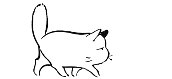

Published and Submitted Papers
[Paper] An EMU Bogie Defect Detection Method Based on Similarity Comparison (最佳论文候选)
First Author
Conference: CAC2024
2024
[Paper] Diffusion Model-based Directional Target Detection for Robotic Sorting Task (Oral)
First Author
Conference: CCDC2025
2025
[Paper] High-Speed Train Bogie Component Detection Network with Dual-Branch Architecture Based on Tensor Fusion of Prior Structural Knowledge
Corresponding Author
Journal: Neural Computing and Applications (Reviews Completed)
2025
[Paper] Research on Docking Planning of Charging Port Based on Depth Vision and Force Sense
Corresponding Author
Conference: IROS2025 (Under Review)
2025
[Paper] Motion Planning of Cleaning Robot Based on 3D Vision
Third Author
Journal: Scientific Reports (Under Review)
2025
[Paper] The Multimodal Defect Detection Based on Position-Prior for Smart High-Speed Railway Inspection
Third Author
Journal: IEEE Transactions on Instrumentation & Measurement (Major Revision)
2025
[Paper] OC-DETR: DETR with Orthogonal Channel Attention and CSPO-Fusion for component detection of TEDS (Oral)
Third Author
Conference: CCDC2025
2025
2024
[Paper] EMU Bogie Bolt Defect Detection by Combining Depth Information and Depth-WS-DAN
Fourth Author
Conference: IROS2025 (Under Review)
2025
[专利] 一种融合先验结构知识的部件目标识别方法
2023